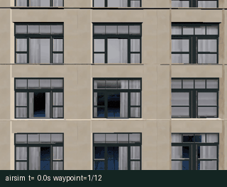
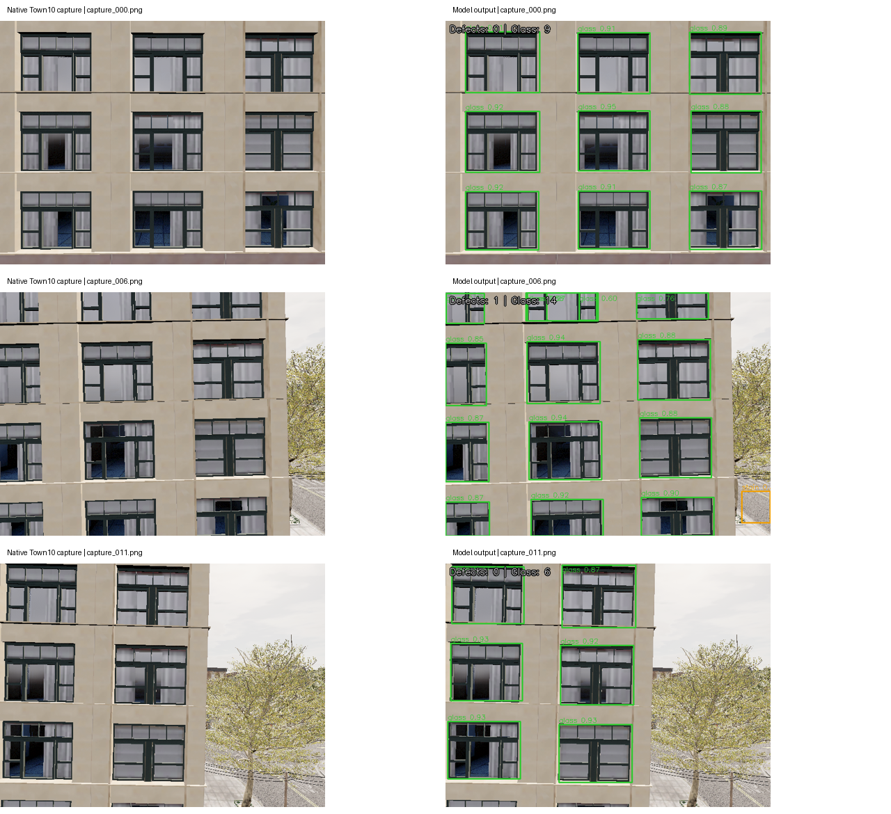

Town10建筑立面自主巡航与病害图像识别¶
无人机沿 Town10HD 建筑立面自主巡航，保存带位姿记录的相机照片，并识别裂缝、污渍、剥落及玻璃构件候选区域。
技术说明¶
- Town10 立面自主巡航与图像采集：原生 AirSim 在线扫描、Town10 纹理场景、神经速度控制及 ROS 2 接口。
- Town10 幕墙图像病害识别：YOLOv8 ONNX 推理、标注验证、训练复现及在线图像订阅。
运行结果¶
| 项目 | 结果 |
|---|---|
| Town10HD 原生航点 | 12/12 |
| 原生巡航照片 | 12 张 |
| 原生巡航时长 | 76.500 s |
| 采图位置最大误差 | 0.2979 m |
| 四类标注验证 | 26 张，mAP50=0.3843 |
玻璃构件不计入病害数量；病害预测用于辅助定位待复查区域，原生照片的候选框不能替代人工确认。


快速运行¶
- 在
src/air/town10_facade_cruise_capture安装依赖，运行python main.py --backend mujoco --style brick --gif --output output/brick查看巡航采集。 - 原生 Town10HD 运行时连接 AirSim 服务，按照巡航技术说明设置起点、相机与启动参数。
- 在
src/air/town10_facade_defect_detection运行python main.py --input samples --output output，或指定巡航采集目录。 - Ubuntu 22.04 / ROS 2 Humble 工作区中构建对应包，再使用各模块的 launch 入口启动。